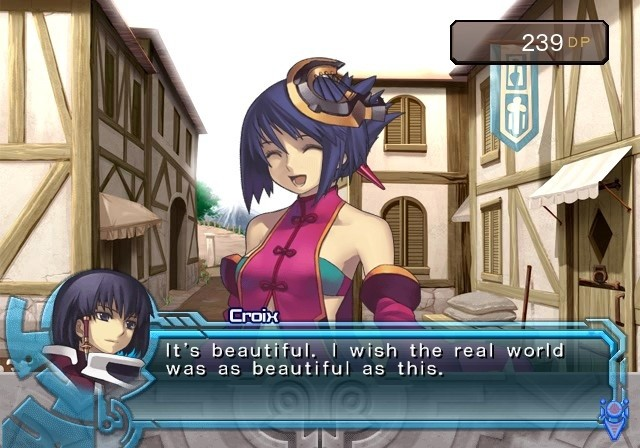

Luca Cosmosphere

Topic Conflict Alert · Lv.2 vs. Cloche Lv.4
Specific inner conversations unlocked across ルカ Lv.2 conflict directly with クローシェ Lv.4 topics such as シンシアのこと. Keep Archive Save B at Lv.5 entry if aiming for complete extras across runs.

Cosmosphere Levels Lv.1 – Lv.9 Checklist
-
Lv.1 可侵領域. Opens in Phase 1 Pastalia. Teaches starter Green/Red Song Magic and pairs with her default スタンダード dress.
-
Lv.2 キューピクルセイド. Clear in Phase 1/2. Awards キリリッシュ costume and key healing/support abilities.
-
Lv.3 おひつの中の世界. Surreal comedy dive confronting suppressed resentment. Completing Lv.3 grants costume 天仰女帝.
-
Lv.4 さくらんぼの使命. Uncovers Luca's burdens regarding her family duties and awards costume プリティチェリー.
-
Lv.5 心侵深々. Contains the パラダイムシフト pivot. Save externally right before confirming if keeping Jacqli and Cocona endings reachable. Awards アサルトベイン.
-
Lv.6 本音で愛してみました. Luca Route exclusive after Paradigm Shift. Rewards offensive Green/Blue upgrades and ソーサルマリア.
-
Lv.7 絶対素敵彼女. Luca Route exclusive. Rewards ヴィーナストリアル and deep bond events with クロア.
-
Lv.8 白い楽譜の子守唄. Resolves the deepest root of her past trauma in Phase 4 and unlocks バスガール.
-
Lv.9 愛は百恥をかける. Final deep level unlocking CHIGIRI bridal dress and top-tier ending Song Magic. Extra bonus outfit チョベリビアン comes from インフェルスフィア Lv.3.